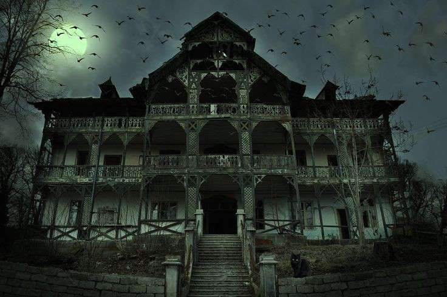

Caso de 1974 volta a ter atenção do público
Por: Pedro de Moraes

Um novo filme de terror sobre o caso da familia Oliveira, de 1974, foi anunciado agora em Março de 2025, com o recém formado diretor de cinema, Frank Rodrigues de Lima, na criação do mesmo
, despertando curiosidade e repercussão nacional.
Informações ainda são limitadas, mas os detalhes divulgados prometem uma narrativa intensa e envolvente.
Aqueles que desconhecem o caso,
A família Oliveira morava em São Paulo mas passava as férias na mansão da família no sul de Pernambuco, numa cidade chamada Jatobá Velho.
Em 1974, eles foram passar as férias de julho nessa cidade, mas algo ocorreu nesse ano. A filha vivia dizendo que conhecera um amigo que morava na floresta ao lado da mansao, e um dia ela foi procurá-lo e não retornou. A família imediatamente começou a procurar a filha, com ajuda dos vizinhos Vieira e da amiga do primogênito dos Oliveira, Marília Cavalcante e da polícia.
Uma semana depois a polícia deu a criança como morta, mas os pais, André e Letícia, recusaram-se a aceitar isso, assim como Mateus, o filho deles. Ele se juntou aos vizinhos e a amiga mas também não foi mais visto.
André pagou por investigadores particulares e entrou em contato com a polícia federal através de contatos. Após investigações, eles acharam uma cabana velha onde um corpo infantil foi encontrado destruído, não tinha como reconhecer o corpo e nem tinha como pegar DNA pela situação do corpo, mas tudo indicou ser de Alice Oliveira, a criança desaparecida.
Indo mais fundo, acharam uma casa com criaturas horríveis mortas pela entrada, entrando acharam os corpos dos vizinhos abraçados com uma massa esquisita entre eles e sorrisos loucos nos rostos. No centro, em uma espécie de símbolo de ritual, estava os corpos mortos de Mateus e Marília.
Após saber que os filhos morreram, os pais entraram em luto e depressão profunda, a mãe se matou uns dias depois, André foi visto andando pela casa por dias, até que começaram a ver como se fosse uma família na casa, assustando os outros vizinhos. A polícia foi investigar e notou que André havia morrido um dia depois da esposa. Ninguém sabe o que aconteceu ou como as crianças morreram, o que era aqueke ritual ou as criaturas nas casas ou como viam a família viva na casa durante dias.